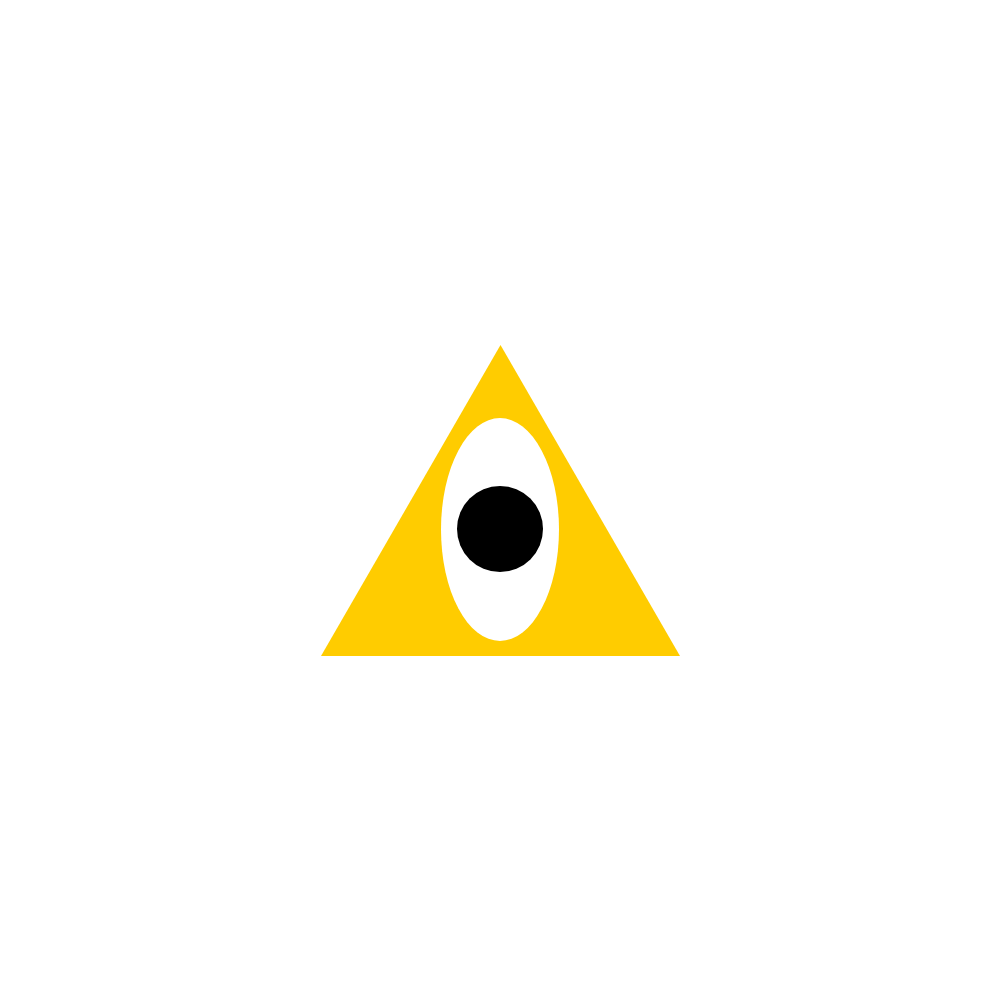

Open Adobe XD
Go to Custom size and type "1000" in the Width and Height dimensions
Now click it to open it
Go to the left side of the screen
Click the triangle icon named "polygon"
Hold shift as you click and drag out a good sized triangle
Center it in the screen by doing "Shift + M" and "Shift + C"
Go to the "appearance" tab on the right side until you find "fill" and "border"
Uncheck the box next to border
Click the rectangle next to fill to open it and enter "#FFCC00" into the Hex code
Go back to the left side and click the circle icon named "ellipse"
click and drag out an oval to a size that fits inside of the triangle
Center it in the screen by doing "Shift + M" and "Shift + C"
Move the oval down a little (resize if it seems too big or too small)
Go to the "appearance" tab again on the right side until you find "fill" and "border"
Uncheck the box next to border
Click the rectangle next to fill to open it and enter "#FFFFFF" into the Hex code
Go back to the left side and click the circle icon named "ellipse"
Hold shift as you click and drag out a circle to a size that fits inside of the oval
Center it in the screen by doing "Shift + M" and "Shift + C"
Move the circle down to fit inside of the oval (resize if it seems too big or too small)
Go to the "Appearance" tab again on the right side until you find "fill" and "border"
Uncheck the box next to border
Click the rectangle next to fill to open it and enter "#000000" into the Hex code
Now go to the 3 lines on the top left and click them
Go down to "Export" and hit "All Artboards"
Make sure the format is a "PNG", go down to "Export for:" and click "Design"
Choose a destination where you will be able to locate it again
Once it has been exported and you are able to locate it go to the "slack" website
Once in the workspace on the left side click "All DMs"
In the "To:" Type in "Ethan Jordan" and click the pop up
Now you should see a message bar at the bottom
Go to the bottom right until you see an icon that looks like a paper clip
It should say "Attach file", click it and click "Your Computer"
Find your recreated design and click "Open" on the bottom right of the window
Now, finally click the "Send message" icon on the very right of the message bar
